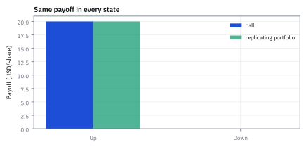
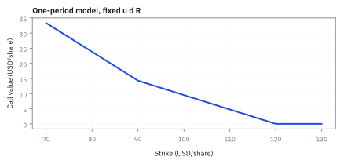
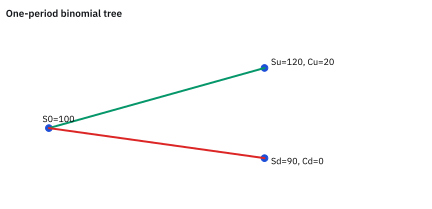

18.3 Binomial Tree Pricing
ราคา option คือต้นทุนของพอร์ตหุ้นกับเงินกู้ที่จ่ายเงินเท่า option ทุกกิ่งของต้นไม้ ไม่ใช่ค่าเฉลี่ยของ payoff ตามโอกาสที่ใครคิดว่าหุ้นจะขึ้น
หุ้น ABC และหุ้น XYZ ราคา \$100 ทั้งคู่ อีกหนึ่งช่วงจะเป็น \$110 หรือ \$90 เหมือนกัน นักวิเคราะห์บอกว่า ABC มีโอกาสขึ้น 99% ส่วน XYZ มีโอกาสขึ้นแค่ 1% เงินฝากโต 1% ต่อช่วง call strike \$100 ของตัวไหนแพงกว่า และแพงกว่ากันเท่าไร คำตอบที่ล่อใจคือคิดลดค่าเฉลี่ยของ payoff ABC ได้ $0.99(10)/1.01=\$9.80$ XYZ ได้ \$0.10
ลองตอบก่อนเปิดเฉลย
ราคาเท่ากันคือ \$5.45 ทั้งสองตัว ถือหุ้นครึ่งหุ้นแล้วกู้ \$44.55 ได้พอร์ตที่จ่าย \$10 เมื่อหุ้นขึ้นและ \$0 เมื่อลง ตรงกับ call ทุกกรณี ถ้ามีคนยอมซื้อ call ของ ABC ที่ \$9.80 เราขายให้แล้วสร้างพอร์ตนี้ด้วย \$5.45 เก็บ \$4.36 ได้แน่นอน โอกาส 99% ไม่อยู่ในสูตรเลย เพราะความเชื่อเรื่องทิศทางอยู่ในราคาหุ้นวันนี้แล้ว
ภาพรวมก่อนลงสูตร
พอร์ตเลียนแบบและสมการ Black–Scholes ตั้งราคา option ในเวลาต่อเนื่องด้วยการ hedge ที่ปรับทุกขณะ หน้านี้ทำเรื่องเดียวกันในโลกที่หุ้นมีแค่สองทางต่อช่วง ซึ่งแก้ได้ด้วยสมการสองตัวแปร ทุกตัวเลขตรวจได้ด้วยเครื่องคิดเลข และต่อยอดไปถึง option แบบอเมริกันที่สูตรปิดทำไม่ได้
ความคิดหลักมีข้อเดียว ถ้าหาพอร์ตหุ้นกับเงินกู้ที่ปลายช่วงมีค่าเท่า option ทุกกิ่งได้ option ต้องมีราคาเท่าต้นทุนของพอร์ตนั้น ไม่อย่างนั้นจะมีคนซื้อของถูกขายของแพงเก็บเงินฟรี โอกาสจริงที่หุ้นจะขึ้นไม่ได้ใช้เลย แต่ราคาที่ได้กลับเขียนได้เหมือน “ค่าเฉลี่ยคิดลด” ด้วยน้ำหนักชุดหนึ่งชื่อ $q$ ที่มาจากตัวต้นไม้เอง
จากนั้นต่อต้นไม้หนึ่งช่วงหลายต้นเป็นต้นไม้หลายช่วง ย้อนคิดจากปลายมาหาวันนี้ ตรวจว่าพอร์ตเลียนแบบไม่ต้องเติมเงิน ตั้งราคา put อเมริกันด้วยการเทียบ “ใช้สิทธิ์เลย” กับ “ถือต่อ” ทุกโหนด ดูว่าปันผลทำให้ call ถูกใช้สิทธิ์ก่อนได้อย่างไร แล้วเลือก $u$ กับ $d$ จากความผันผวนจนต้นไม้ลู่เข้า Black–Scholes
รูป — ต้นไม้หนึ่งช่วงของ ABC และ XYZ
ศัพท์ที่ใช้ในหัวข้อนี้
- Binomial tree
- แบบจำลองที่ราคาหุ้นในแต่ละช่วงคูณ $u$ (ขึ้น) หรือ $d$ (ลง) ได้แค่สองทาง ใช้เพราะแก้ด้วยพีชคณิตได้ทีละโหนด และเมื่อซอยช่วงถี่พอก็ใกล้แบบจำลองเวลาต่อเนื่อง
- Replicating portfolio
- พอร์ตหุ้น $x$ หุ้นกับเงินฝากหรือเงินกู้ $y$ ที่จ่ายเงินเท่า option ทุกกิ่ง ของสองอย่างที่จ่ายเท่ากันทุกกรณีต้องมีราคาเท่ากัน จึงใช้เป็นราคาได้
- Arbitrage แบบ A และแบบ B
- แบบ A คือได้เงินวันนี้และไม่มีทางเสียในอนาคต แบบ B คือไม่ต้องจ่ายวันนี้ ไม่มีทางเสีย และมีโอกาสได้ ราคาที่ดีต้องไม่เปิดช่องทั้งสองแบบ
- Risk-neutral probability ($q$)
- น้ำหนักที่ทำให้ราคา option เขียนเป็นค่าเฉลี่ยของ payoff คิดลดด้วยดอกเบี้ย มันมาจาก $u$, $d$ และ $R$ เท่านั้น ไม่ใช่โอกาสจริงที่หุ้นจะขึ้น
- European และ American option
- แบบยุโรปใช้สิทธิ์ได้วันหมดอายุวันเดียว แบบอเมริกันใช้สิทธิ์ได้ทุกวันก่อนหมดอายุ ต้นไม้ตั้งราคาแบบหลังได้ด้วยการเทียบ “ใช้เลย” กับ “ถือต่อ” ทุกโหนด
- Self-financing และ backward induction
- self-financing คือปรับพอร์ตได้ทุกโหนดโดยไม่เติมหรือดึงเงิน backward induction คือคิดจากปลายต้นไม้ที่รู้ payoff แน่นอน ย้อนกลับมาทีละช่วงจนถึงวันนี้
สัญลักษณ์และหน่วย
| สัญลักษณ์ | ความหมาย | หน่วย |
|---|---|---|
| $S_0,\ K$ | ราคาหุ้นวันนี้ และ strike | ดอลลาร์ต่อหุ้น |
| $u,\ d$ | ตัวคูณราคาเมื่อขึ้นและลงในหนึ่งช่วง | ไม่มีหน่วย |
| $R$ | เงินฝาก \$1 โตเป็น $R$ ดอลลาร์ในหนึ่งช่วง | ไม่มีหน่วย |
| $C_u,\ C_d,\ C_0$ | ค่า option ที่กิ่งขึ้น กิ่งลง และวันนี้ | ดอลลาร์ต่อหุ้น |
| $x,\ y$ | จำนวนหุ้น และเงินในบัญชีเงินฝาก (ลบคือกู้) | หุ้น, ดอลลาร์ |
| $q,\ p$ | น้ำหนักตั้งราคา และโอกาสจริงที่หุ้นขึ้น | ไม่มีหน่วย |
| $c$ | ปันผลต่อช่วงเป็นสัดส่วนของราคาหุ้น | ไม่มีหน่วย |
| $\sigma,\ \Delta t,\ n$ | ความผันผวนต่อปี ความยาวหนึ่งช่วง และจำนวนช่วง | ต่อปี$^{1/2}$, ปี, ช่วง |
ขั้นที่ 1 — หนึ่งช่วงด้วยมือ: พอร์ตหุ้นกับเงินกู้ที่จ่ายเท่า call
หุ้น \$100 อีกหนึ่งช่วงเป็น \$120 หรือ \$90 เงินฝากโต 1.05 call strike \$100 จ่าย \$20 หรือ \$0 เราไม่ทายว่าหุ้นจะไปทางไหน แต่หาพอร์ต $x$ หุ้นกับเงิน $y$ ในบัญชีที่ปลายช่วงมีค่าเท่า call ทั้งสองกิ่ง ได้สองสมการสองตัวแปร
ลบสมการล่างออกจากบน เงินฝากหักล้างกันเหลือ $30x=20$ พอร์ตคือซื้อหุ้นสองในสามหุ้น แล้วกู้ \$57.1429 ซึ่งปลายช่วงต้องคืน \$60 ถ้าหุ้นขึ้นได้ $80-60=20$ ถ้าลงได้ $60-60=0$ ตรงกับ call ทั้งสองกิ่ง $y$ ติดลบแปลว่ากู้ ถ้า $x$ ติดลบจะแปลว่าชอร์ตหุ้น ซึ่งเกิดกับ put
ทำไมราคาต้องเป็น \$9.5238 พอดี สมมติ dealer รายหนึ่งยอมซื้อ call จากเราที่ \$12 เราขายให้ แล้วใช้ \$9.5238 สร้างพอร์ตเลียนแบบ ปลายช่วงพอร์ตจ่ายภาระของ call ได้พอดีทุกกิ่ง เหลือ \$2.4762 ตั้งแต่วันนี้ ถ้าอีกรายยอมขาย call ให้เราที่ \$8 เราซื้อ แล้วทำพอร์ตกลับทาง (ชอร์ตหุ้น $\tfrac23$ หุ้น ฝาก \$57.1429) ได้ \$1.5238 วันนี้ ทั้งสองกรณีคือ arbitrage แบบ A ได้เงินวันนี้และไม่มีทางเสีย ราคาที่ไม่เปิดช่องนี้มีค่าเดียว ในตลาดจริงเงินก้อนนี้เป็นเพดาน ก่อนหักส่วนต่างราคาซื้อขาย ค่ายืมหุ้น และหลักประกัน
รูป — พอร์ตเลียนแบบจ่ายเท่า call ทั้งสองกิ่ง

ขั้นที่ 2 — ต้นไม้ต้องมี $d\lt R\lt u$ ไม่อย่างนั้นทั้งตลาดมีเงินฟรี
ก่อนตั้งราคา option ต้องถามว่าหุ้นกับเงินฝากเองเปิดช่องให้เก็บเงินฟรีไหม ถ้าเงินฝากแพ้หุ้นแม้ในกิ่งที่แย่ที่สุด ($R\le d$) ให้กู้ $S_0$ มาซื้อหุ้นหนึ่งหุ้น ถ้าเงินฝากชนะหุ้นแม้ในกิ่งที่ดีที่สุด ($R\ge u$) ให้ชอร์ตหุ้นหนึ่งหุ้นแล้วฝากเงินที่ได้ ทั้งสองทางไม่ใช้เงินตัวเองเลย ดูว่าปลายช่วงได้อะไร
ทั้งสองกรณีเป็น arbitrage แบบ B ต้นทุนศูนย์ ไม่มีกิ่งไหนติดลบ และมีกิ่งที่ได้แน่ ๆ ตลาดจึงไม่มีช่องนี้ก็ต่อเมื่อ $d\lt R\lt u$ คือดอกเบี้ยต้องอยู่ระหว่างผลตอบแทนของหุ้นในกิ่งแย่กับกิ่งดี ตัวอย่างหนึ่งช่วงด้านบนผ่าน เพราะ $0.9\lt 1.05\lt 1.2$
ขั้นที่ 3 — จัดรูปราคาเลียนแบบ แล้วน้ำหนัก $q$ โผล่ออกมาเอง
ทำสมการสองตัวแปรเดิมในรูปทั่วไป กิ่งขึ้นหุ้นเป็น $uS_0$ option จ่าย $C_u$ กิ่งลงเป็น $dS_0$ จ่าย $C_d$ แก้หา $x$ กับ $y$ แล้วรวมเป็นราคา ไม่เติมสมมติฐานเรื่องโอกาสเลย แค่จัดพีชคณิต
บรรทัดที่สี่เอา $xS_0$ ไปคูณ $R/R$ แล้วรวมกับ $y$ ส่วนบรรทัดที่ห้ารวมพจน์ของ $C_d$ ได้ $C_d-\frac{(R-d)C_d}{u-d}=\frac{u-R}{u-d}C_d$ ตัวคูณสองตัวบวกกันได้ 1 และเป็นบวกทั้งคู่เมื่อ $d\lt R\lt u$ จึงตั้งชื่อว่า $q$ และ $1-q$ ได้
ราคาจึงเขียนเหมือน “ค่าเฉลี่ยของ payoff คิดลด” แต่ลำดับกลับกัน เราได้ราคาจากการเลียนแบบก่อน แล้วค่อยพบว่ามันมีรูปค่าเฉลี่ย ตัวอย่างหนึ่งช่วงด้านบนได้ $q=0.15/0.30=0.5$ และ $0.5(20)/1.05=9.5238$ เท่ากัน ตรวจได้ด้วยว่า $qu+(1-q)d=0.5(1.2)+0.5(0.9)=1.05=R$ คือใต้น้ำหนัก $q$ หุ้นโตเท่าเงินฝาก ชื่อ risk-neutral มาจากตรงนี้ ข้อเท็จจริงนี้ใช้ได้ทั่วไป มีน้ำหนักแบบ $q$ ที่เป็นบวกทุกกิ่งก็ต่อเมื่อไม่มี arbitrage ผลนี้ชื่อ first fundamental theorem of asset pricing
put strike 100 บนต้นไม้เดียวกันจ่าย 0 กับ 10 จึงได้ $0.5(10)/1.05=4.7619$ ($x=-\tfrac13$ คือชอร์ตหุ้น) และ $9.5238-4.7619=100-100/1.05$ ตรงกับput–call parity (call ลบ put เท่ากับหุ้นลบ strike ที่คิดลดแล้ว)
รูป — ราคา call ของต้นไม้หนึ่งช่วงเมื่อ strike เปลี่ยน

ขั้นที่ 4 — ปริศนา ABC กับ XYZ
โจทย์ให้อะไรมาบ้าง: ทั้งสองหุ้น $S_0=100$ ไป 110 หรือ 90 call strike 100 จ่าย 10 หรือ 0 โอกาสขึ้นจริง $p=0.99$ สำหรับ ABC และ $p=0.01$ สำหรับ XYZ เงินฝากโต $R=1.01$
คำตอบ: call ทั้งสองตัวราคา \$5.4455 เพราะพอร์ตเลียนแบบเหมือนกันทุกตัวเลข สองแถวล่างคือราคาถ้าคิดลดด้วยโอกาสจริง ถ้ามีคนซื้อ call ของ ABC ที่ \$9.8020 เราขายแล้วสร้างพอร์ตด้วย \$5.4455 เก็บ \$4.3564 แน่นอน
ตรวจเองใน 10 วินาที: $q$ ไม่ขึ้นกับ $p$ เลย ในสูตรมีแค่ 1.01, 1.1 และ 0.9 ส่วนที่ดูแปลกเพราะโจทย์ถามผิดตั้งแต่ต้น ถ้าตลาดเชื่อว่า ABC ขึ้นแน่ ราคาวันนี้คงไม่เท่ากับ XYZ ที่ \$100 ความเชื่อเรื่องทิศทางอยู่ในราคาหุ้นแล้ว option จึงไม่นับซ้ำ ในเวลาต่อเนื่องก็เหมือนกัน drift $\mu$ ของหุ้นไม่อยู่ในสูตร Black–Scholes ด้วยเหตุผลเดียวกับที่ $p$ ไม่อยู่ในต้นไม้
ขั้นที่ 5 — ต้นไม้ 107 กับ 93.46: strike สามค่า
โจทย์ให้อะไรมาบ้าง: หุ้น \$100 ไป 107 หรือ 93.46 คือ $u=1.07$ $d=0.9346$ (ปัดจาก $1/1.07=0.934579$) $R=1.01$ หา call สามตัว strike 102, 107 และ 92
คำตอบ: 2.76, 0 และ 8.91 strike 107 เท่ากับยอดกิ่งขึ้นพอดี call จึงจ่ายศูนย์ทั้งสองกิ่งและราคาศูนย์ strike 92 ต่ำกว่าทั้งสองกิ่ง call ถูกใช้สิทธิ์แน่นอน จึงเท่ากับถือหุ้นหนึ่งหุ้นแล้วกู้ $92/1.01$ ไม่ต้องใช้ $q$ เลย
ตรวจเองใน 10 วินาที: $0.5569(5)/1.01=2.76$ ตรงกับพอร์ตเลียนแบบ ถ้าใช้ $d=1/1.07$ เต็มหลัก เงินกู้เป็น 34.1649 ราคายังปัดได้ 2.76
ขั้นที่ 6 — ต่อเป็นสามช่วง: ย้อนทีละโหนด หรือถ่วงปลายทางครั้งเดียว
ต้นไม้หลายช่วงคือต้นไม้หนึ่งช่วงหลายต้นต่อกัน ทุกโหนดใช้สูตร $q$ เดิม เริ่มจากปลายทางที่รู้ payoff แน่นอน ใช้ $u=1.07$ $d=1/1.07$ $R=1.01$ call strike 100 หมดอายุที่ช่วงที่ 3 น้ำหนัก $q=0.556936$ หุ้นปลายทางคือ 122.50, 107.00, 93.46 และ 81.63 call จึงจ่าย $C_3$ ตามแถวแรก
ทางที่สองไม่ต้องหาค่ากลางทาง โอกาสของแต่ละเส้นทางคือผลคูณน้ำหนักตามกิ่ง ปลายที่ขึ้น $j$ ครั้งจาก $n$ ครั้งมี $\binom nj$ เส้นทาง จึงได้ผลบวกแบบ binomial ในแถวที่เจ็ด ปลายบนต้องขึ้นสามครั้ง ปลายที่สองขึ้นสองลงหนึ่งมีสามเส้นทาง สองปลายล่างจ่ายศูนย์ แล้วคิดลดครั้งเดียวด้วย $1.01^3=1.030301$
ปลายบนสุดคือ $100(1.07)^3=122.5043$ ไม่ใช่ 122.50 พอดี ถ้าใช้ 22.50 จะได้ 6.5737 แทน 6.5744 ต่างกันเล็กน้อยแต่พอให้สองวิธีไม่ตรงกันในหลักที่สี่
รูป — ต้นไม้สามช่วง และราคา call ทุกโหนด

ขั้นที่ 7 — พอร์ตเลียนแบบทีละโหนด และตรวจว่าไม่ต้องเติมเงิน
ที่แต่ละโหนดถือหุ้น $x$ หุ้นกับบัญชีเงินฝาก $y$ หน่วย โดยหนึ่งหน่วยมีค่า $B_t=1.01^t$ ที่เวลา $t$ คำถามคือ ตอนหุ้นขึ้นไปที่ 107 แล้วต้องปรับพอร์ต ต้องใส่เงินเพิ่มหรือไม่ ถ้าต้องใส่ ราคา 6.57 วันนี้ก็ยังไม่ครบต้นทุน
พอร์ตเก่าเข้าโหนดนี้ด้วยค่า 10.23 เท่ากับ call ที่โหนดนั้นพอดี แล้วขายเงินฝากไปซื้อหุ้นเพิ่มเป็น 0.8019 หุ้น พอร์ตใหม่ยังมีค่า 10.23 ไม่มีเงินไหลเข้าออก นี่คือ self-financing และเป็นเหตุผลว่าทำไมราคาวันนี้ 6.57 พอสำหรับทั้งต้นไม้
แถวสุดท้ายคือนิยามเดียวกันในรูปทั่วไป ค่าพอร์ตเปลี่ยนได้จากกำไรขาดทุนของหุ้นและดอกเบี้ยที่ถืออยู่เท่านั้น ไม่มีเงินเติมจากนอกพอร์ต โหนดอื่นได้แบบเดียวกัน ล่างของเวลา 1 ถือ $[0.3050,\ -26.11]$ ที่เวลา 2 บนสุด $[1,\ -97.06]$ กลาง $[0.5169,\ -46.89]$ และล่างสุด $[0,\ 0]$ ที่บนสุดถือหุ้นเต็มหนึ่งหุ้นเพราะ call ถูกใช้สิทธิ์แน่แล้ว $x$ ในแต่ละโหนดก็คือ delta ที่กำไรขาดทุนของการ delta hedge จะตามต่อ
ขั้นที่ 8 — ดอกเบี้ยสูงขึ้น call แพงขึ้น
โจทย์ให้อะไรมาบ้าง: ต้นไม้สามช่วง $u=1.06$ $d=1/1.06$ call strike 95 ลองดอกเบี้ยต่อช่วง $R=1.02$ และ $R=1.04$
คำตอบ: ดอกเบี้ยขึ้น ราคา call ขึ้นจาก 11.04 เป็น 15.64 แม้จะคิดลดแรงขึ้น เพราะ $q$ ขึ้นจนน้ำหนักเทไปทางปลายที่ call มีค่า เหตุผลทางเงิน ผู้ซื้อ call เลื่อนการจ่าย strike ไปปลายทาง เงินที่เลื่อนไปนั้นได้ดอกเบี้ยมากขึ้น
ตรวจเองใน 10 วินาที: ต้นไม้ราคาหุ้นเหมือนเดิมทั้งสองกรณี (ปลายบนสุด $100(1.06)^3=119.10$ call จ่าย 24.10) สิ่งเดียวที่เปลี่ยนคือ $R$ ซึ่งเข้าไปทั้งใน $q$ และในตัวหาร
ขั้นที่ 9 — option อเมริกัน: ทุกโหนดเลือกค่าที่มากกว่าระหว่างใช้เลยกับถือต่อ
เริ่มจากเกมที่เห็นภาพง่าย ทอยลูกเต๋าได้สูงสุดสามครั้ง หลังแต่ละครั้งจะหยุดรับเงินเท่าแต้มก็ได้ หรือทอยต่อก็ได้ คิดจากครั้งสุดท้ายย้อนกลับ แล้วใช้ตรรกะเดียวกันกับ put อเมริกัน strike 100 บนต้นไม้สามช่วงด้านบน
เหลือทอยครั้งเดียวต้องรับแต้มที่ออก ค่าเฉลี่ย 3.5 เหลือสองครั้ง ออก 4, 5, 6 ควรหยุดเพราะมากกว่า 3.5 ที่จะได้ถ้าทอยต่อ ครั้งแรกของสามครั้ง เกณฑ์หยุดขึ้นเป็น 4.25 จึงหยุดแค่ 5 กับ 6 ถ้าทอยได้ 1,000 ครั้ง ค่าของเกมเข้าใกล้ 6 เพราะรอจน 6 ออกได้แทบแน่นอน
put ที่โหนดล่างสุดของเวลา 2 (หุ้น 87.34) ถือต่อได้ 11.67 แต่ใช้สิทธิ์ทันทีได้ 12.66 จึงใช้ทันที เพราะรับ \$100 เร็วขึ้นแล้วได้ดอกเบี้ย ที่โหนดล่างของเวลา 1 ถือต่อได้ 7.13 มากกว่าใช้เลย 6.54 จึงถือ put อเมริกันแพงกว่ายุโรป \$0.19
call บนหุ้นที่ไม่จ่ายปันผลไม่มีวันคุ้มที่จะใช้ก่อน เพราะค่าถือต่อไม่ต่ำกว่า $S_t-K/R^{n-t}$ (ถือหุ้นหนึ่งหุ้นกู้ $K/R^{n-t}$ ไม่มีทางดีกว่า call) ซึ่งมากกว่า $S_t-K$ ที่ได้ถ้าใช้เลย
รูป — put อเมริกันบนต้นไม้สามช่วง และโหนดที่ใช้สิทธิ์ก่อน
ขั้นที่ 10 — หุ้นที่จ่ายปันผล: $q$ เปลี่ยน และ call อเมริกันอาจถูกใช้สิทธิ์ก่อน
ถ้าหุ้นจ่ายปันผลเป็นสัดส่วน $c$ ของราคาทุกช่วง คนถือหุ้นได้ทั้งราคาใหม่และปันผล $cS_0$ แต่คนถือ option ได้แค่ราคาหุ้น พอร์ตเลียนแบบจึงต้องนับปันผลด้วย ตั้งสมการเหมือนเดิมแล้วดูว่า $q$ กลายเป็นอะไร ตัวอย่างใช้ต้นไม้ $u=1.07$ $d=1/1.07$ $R=1.01$ เดิม กับปันผล $c=0.01$ ต่อช่วง
ลบสองสมการแรก ปันผลหักล้างกันเหมือนเงินฝาก $x$ จึงเหมือนเดิม แต่เงินที่ต้องกู้เปลี่ยน ผลคือ $q$ ลดจาก 0.5569 เป็น 0.4831 เพราะใต้น้ำหนัก $q$ ผลตอบแทนรวมของหุ้น (ราคาบวกปันผล) ต้องเท่าเงินฝาก ราคาหุ้นอย่างเดียวจึงโตช้ากว่า เงื่อนไขไม่มีเงินฟรีกลายเป็น $d+c\lt R\lt u+c$ call ยุโรปจึงถูกลงเหลือ 4.92 จาก 6.57
ที่โหนดบนสุดของเวลา 2 (หุ้น 114.49) ถือ call ต่อได้ 14.35 แต่ใช้สิทธิ์เลยได้ 14.49 เพราะการใช้สิทธิ์ทำให้ได้หุ้นมาถือทันเก็บปันผลงวดหน้า call อเมริกันจึงแพงกว่ายุโรปเล็กน้อย (4.95 เทียบ 4.92) ถ้าตั้ง $c=0$ ในต้นไม้เดียวกัน ทุกโหนดถือต่อชนะ และ call อเมริกันเท่ากับยุโรปที่ 6.57 พอดี ปันผลจึงเป็นเหตุผลเดียวที่ทำให้ call ถูกใช้สิทธิ์ก่อน รายละเอียดของปันผลที่จ่ายเป็นเงินก้อนในวันจริงอยู่ในหน้าปันผลในสูตรราคา
รูป — call อเมริกันบนหุ้นที่จ่ายปันผล
ขั้นที่ 11 — $u$ กับ $d$ มาจากไหน: เลือกจากความผันผวน (CRR)
ตัวอย่างข้างบนเลือก $u$ และ $d$ ให้เลขสวย ถ้าจะใช้ต้นไม้กับหุ้นจริง สองตัวนี้ต้องมาจากสิ่งที่วัดได้ Cox, Ross และ Rubinstein ให้ log ของราคาขยับ $\pm\sigma\sqrt{\Delta t}$ ต่อช่วง ซึ่งทำให้ความแปรปรวนของ log ราคาต่อช่วงเป็น $\sigma^2\Delta t$ ตรงกับgeometric Brownian motion ตัวอย่างใช้ $\sigma=30\%$ ต่อปี ช่วงละ $\Delta t=0.01$ ปี และดอกเบี้ย 5% ต่อปีทบต้นต่อเนื่อง
$X$ คือก้าวของ log ราคาในหนึ่งช่วง ทั้งสองกิ่งยกกำลังสองได้ค่าเดียวกัน ความแปรปรวนจึงถูกตรึงไว้ไม่ว่าน้ำหนักจะเป็นเท่าไร (ถ้าค่าเฉลี่ยใกล้ศูนย์ ซึ่งจริงเมื่อ $\Delta t$ สั้น) และ $ud=1$ ทำให้ขึ้นแล้วลงกลับมาที่เดิม ต้นไม้จึงรวมกิ่ง มี $t+1$ โหนดที่เวลา $t$ แทน $2^t$ (ที่ 30 ช่วงคือ 31 โหนดแทนราวหนึ่งพันล้าน) ถ้าหุ้นจ่ายปันผลต่อเนื่องในอัตรา $c$ ต่อปี ใช้ $q=(e^{(r-c)\Delta t}-d)/(u-d)$ แทน
อ่านกลับทางก็ได้ ต้นไม้สองช่วง ช่วงละครึ่งปี ที่ $u=1.2$ เท่ากับความผันผวน $\ln 1.2/\sqrt{0.5}=25.78\%$ ต่อปี ตัวอย่างต่อไปใช้ต้นไม้นี้
ขั้นที่ 12 — put อเมริกันบนต้นไม้ CRR สองช่วง
โจทย์ให้อะไรมาบ้าง: หุ้น \$100 put strike 100 อายุ 1 ปี ดอกเบี้ย 2% ต่อปีทบต้นต่อเนื่อง สองช่วง $\Delta t=0.5$ $u=1.2$ $d=1/1.2$
คำตอบ: ที่โหนดล่าง (หุ้น 83.33) ใช้สิทธิ์ทันทีได้ 16.6667 มากกว่าถือต่อ 15.6717 put อเมริกันจึงราคา \$8.5482 แพงกว่ายุโรป \$8.0378 อยู่ \$0.5103 ถ้าใช้สูตรแบบยุโรปกับ put อเมริกัน ราคาจะต่ำไป 6%
ตรวจเองใน 10 วินาที: $0.990050\times0.518045\times16.6667=8.5482$ และกิ่งบนเป็นศูนย์ทั้งหมดเพราะหุ้นไม่เคยต่ำกว่า 100 ในกิ่งนั้น
ขั้นที่ 13 — ซอยช่วงถี่ขึ้น ต้นไม้ลู่เข้า Black–Scholes
ต้นไม้เป็นแบบจำลองที่ใช้ได้ก็ต่อเมื่อซอยถี่แล้วได้คำตอบเดียวกับสูตรปิด ใช้ call ยุโรป หุ้น \$100 strike 100 ดอกเบี้ย 5% ความผันผวน 30% อายุ 1 ปี บนต้นไม้ CRR $n$ ช่วง เทียบกับสูตร Black–Scholes (ในวงเล็บคือส่วนต่างจากสูตรปิด)
ความคลาดเคลื่อนเล็กลงราวสิบเท่าทุกครั้งที่ $n$ โตสิบเท่า และสลับข้าง $n$ คู่ต่ำไป $n$ คี่สูงไป เพราะเมื่อ $n$ คู่ strike 100 ตรงกับโหนดกลางพอดี ความสลับนี้เป็นลักษณะปกติของต้นไม้ ไม่ใช่สัญญาณว่าคำนวณผิด
ทำไมต้องลู่เข้า แยกผลบวกแบบ binomial ของต้นไม้สามช่วงออกเป็นสองก้อน ก้อนแรกคือ $S_0$ คูณผลบวกของโอกาสที่ปลายอยู่เหนือ strike (ถ่วงแบบหนึ่ง) ก้อนที่สองคือ $K/R^n$ คูณโอกาสที่ปลายอยู่เหนือ strike ใต้ $q$ หน้าตาเหมือน $S_0N(d_1)-Ke^{-rT}N(d_2)$ ของ Black–Scholes แล้ว เมื่อ $n$ โต log ราคาปลายทางคือผลบวกของก้าว $\pm\sigma\sqrt{\Delta t}$ จำนวนมาก ตามcentral limit theorem ผลบวกแบบนี้เข้าใกล้ Normal ผลบวก binomial สองก้อนจึงกลายเป็น $N(d_1)$ กับ $N(d_2)$
รูป — ราคาบนต้นไม้แกว่งรอบ Black–Scholes แล้วแคบลง
ความผิดที่ให้คำตอบผิดแบบเงียบ ๆ
อ่าน $q$ เป็นโอกาสจริง หรือใช้ $p$ แทน $q$: call ของ ABC ได้ \$9.80 แทน \$5.45 และใครขายที่ราคานั้นให้ได้เสีย \$4.36 ต่อสัญญาให้คนที่สร้างพอร์ตเลียนแบบ
คิดว่าต้องใช้ utility ของคนซื้อ: โยนเหรียญจนออกหัว ถ้าออกครั้งที่ $n$ ได้ $2^n$ ดอลลาร์ ค่าเฉลี่ยคือ $\sum 2^n(1/2)^n=1+1+\dots$ เป็นอนันต์ แต่ไม่มีใครจ่ายมากเพื่อเล่น (ปริศนา St Petersburg) Daniel Bernoulli ให้คนตัดสินด้วย utility แบบ log ได้ค่าเฉลี่ย $\log2\sum n/2^n=2\log2$ เงินแน่นอนที่พอใจเท่ากันคือ $e^{2\log2}=\$4$ แต่ utility ของแต่ละคนไม่เท่ากัน ราคาจึงไม่มีค่าเดียว ต้นไม้หลบปัญหานี้ทั้งหมด ถ้าสร้างพอร์ตเลียนแบบได้ ราคาถูกบังคับเหลือค่าเดียวโดยไม่ต้องรู้ทั้งโอกาสจริงและความชอบของใคร
ลืมคิดลด: $0.5(20)=10$ ไม่ใช่ราคา ราคาคือ $10/1.05=9.5238$ ต่างกัน 5% ต่อช่วง และทบกันทุกช่วงของต้นไม้
ตั้งราคา put อเมริกันด้วยต้นไม้แบบยุโรป: ต้นไม้ CRR สองช่วงได้ 8.0378 แทน 8.5482 ต่ำไป 6% เพราะลืมเทียบ “ใช้เลย” ทุกโหนด
ลืมปันผลใน $q$: ต้นไม้ที่หุ้นจ่าย 1% ต่อช่วง ถ้ายังใช้ $q=0.5569$ ได้ call 6.57 แทน 4.92 แพงไป 34%
เลือก $u$, $d$, $R$ ที่ไม่ผ่าน $d\lt R\lt u$: เช่น $u=1.01$ $d=0.99$ $R=1.02$ ได้ $q=(1.02-0.99)/0.02=1.5$ เกิน 1 และ $1-q$ ติดลบ ราคาที่ได้ไม่มีความหมาย โค้ดท้ายหน้าจึงปฏิเสธต้นไม้แบบนี้
ใช้ทำอะไรบนโต๊ะจริง
option หุ้นที่ซื้อขายในสหรัฐฯ ส่วนใหญ่เป็นแบบอเมริกัน โต๊ะ option จึงใช้ต้นไม้หรือกริดตั้งราคา put ที่ใช้สิทธิ์ก่อนได้และ call บนหุ้นที่จ่ายปันผล และใช้ต้นไม้เป็นตัวตรวจวิธีอื่น (ซอยถี่แล้วต้องเข้าใกล้สูตรปิด) ข้อจำกัดคือต้นไม้ใช้ $\sigma$ ตัวเดียว ขณะที่ตลาดให้ความผันผวนต่างกันตาม strike และอายุ (volatility surface) ต้นไม้ที่ใช้ $\sigma$ เดียวจึงตั้งราคาผิดกับ strike ที่ห่างจากราคาหุ้น ส่วน $x$ ในแต่ละโหนดคือจำนวนหุ้นที่ต้องถือเพื่อ hedge ซึ่งหน้าถัดไปจะนับกำไรขาดทุนของการ hedge แบบนี้
โจทย์ตรวจความเข้าใจ
1. หุ้น \$50 อีกหนึ่งช่วงเป็น \$60 หรือ \$45 เงินฝากโต 1.02 put strike 50 ราคาเท่าไร หาทั้งพอร์ตเลียนแบบและ $q$
เฉลย
put จ่าย 0 กับ 5 $x=(0-5)/(60-45)=-\tfrac13$ (ชอร์ตหุ้น) $y=(5+\tfrac13(45))/1.02=19.6078$ ราคา $-16.6667+19.6078=\$2.9412$ ตรวจด้วย $q=(1.02-0.9)/(1.2-0.9)=0.4$ ได้ $0.6(5)/1.02=2.9412$ เท่ากัน
2. ใช้ put–call parity หา put ยุโรป strike 100 บนต้นไม้สามช่วง ($u=1.07$, $R=1.01$) จาก call 6.5744 แล้วเทียบกับ 3.63 ที่ได้จากการย้อนทีละโหนด
เฉลย
$P=C-S_0+K/R^3=6.5744-100+100/1.030301=6.5744-100+97.0590=\$3.6334$ ตรงกับการย้อนทีละโหนด เพราะ call ลบ put คือ forward ซึ่งเลียนแบบได้ด้วยหุ้นหนึ่งหุ้นกับเงินกู้ $K/R^3$ ในทุกกิ่ง
3. สัญญา forward บนต้นไม้สามช่วงเดียวกัน (หุ้นไม่จ่ายปันผล) ตกลงซื้อหุ้นที่ช่วงที่ 3 ในราคา $G_0$ โดยไม่ต้องจ่ายอะไรวันนี้ $G_0$ ต้องเป็นเท่าไร
เฉลย
สัญญาที่ไม่ต้องจ่ายวันนี้ต้องมีค่าศูนย์ $0=\frac{1}{R^3}\big(E^q[S_3]-G_0\big)$ จึงได้ $G_0=E^q[S_3]$ ใต้น้ำหนัก $q$ หุ้นโตเท่าเงินฝากทุกช่วง ($qu+(1-q)d=R$) ดังนั้น $E^q[S_3]=S_0R^3=100(1.01)^3=\$103.03$ ตรวจด้วยพอร์ต ซื้อหุ้นวันนี้ด้วยเงินกู้ \$100 ช่วงที่ 3 ต้องคืน \$103.03 ซึ่งคือราคาที่ทำให้การถือหุ้นผ่าน forward กับการซื้อหุ้นด้วยเงินกู้เท่ากัน (ต่อยอดในcost of carry)
คำนวณซ้ำด้วย JavaScript
เปิดดูโค้ด
const {exp, log, sqrt, max, abs} = Math;
function check(u, d, R, c = 0) {
if (!(d + c < R && R < u + c)) throw new RangeError('no-arbitrage needs d + c < R < u + c');
}
// One period: x shares and y dollars in the bank reproduce payoffs vu (up) and vd (down).
function replicate(S0, u, d, R, vu, vd) {
check(u, d, R);
const x = (vu - vd) / (S0 * (u - d));
const y = (vd - x * S0 * d) / R;
return {x, y, price: x * S0 + y, q: (R - d) / (u - d)};
}
// n-period recombining tree; c = proportional dividend per period; american allows early exercise.
function tree({S0, K, u, d, R, n, kind = 'call', american = false, c = 0}) {
check(u, d, R, c);
const q = (R - d - c) / (u - d);
const pay = s => kind === 'call' ? max(s - K, 0) : max(K - s, 0);
const S = (t, k) => S0 * u ** k * d ** (t - k);
let V = [...Array(n + 1)].map((_, k) => pay(S(n, k)));
const nodes = [V], exercised = [];
for (let t = n - 1; t >= 0; t--) {
V = V.slice(0, t + 1).map((_, k) => {
const hold = (q * V[k + 1] + (1 - q) * V[k]) / R;
if (american && pay(S(t, k)) > hold) { exercised.push([t, k, S(t, k), hold]); return pay(S(t, k)); }
return hold;
});
nodes.unshift(V);
}
return {price: V[0], q, nodes, exercised, S, R};
}
// Holdings chosen at node (t, k): x shares and y units of a bank account worth R^t.
function holdings(res, t, k) {
const {nodes, S, R} = res;
const x = (nodes[t + 1][k + 1] - nodes[t + 1][k]) / (S(t + 1, k + 1) - S(t + 1, k));
return {x, y: (nodes[t][k] - x * S(t, k)) / R ** t};
}
// Standard normal CDF from its Taylor series around 0.
function normCdf(x) {
if (x < -8) return 0;
if (x > 8) return 1;
let term = x, sum = x;
for (let k = 1; k < 300 && abs(term) > 1e-17 * abs(sum); k++) { term *= x * x / (2 * k + 1); sum += term; }
return 0.5 + sum * exp(-x * x / 2) / sqrt(2 * Math.PI);
}
function blackScholesCall(S, K, r, sigma, T) {
const d1 = (log(S / K) + (r + sigma * sigma / 2) * T) / (sigma * sqrt(T));
return S * normCdf(d1) - K * exp(-r * T) * normCdf(d1 - sigma * sqrt(T));
}
// Cox-Ross-Rubinstein steps.
const crr = (sigma, r, T, n) => ({u: exp(sigma * sqrt(T / n)), d: exp(-sigma * sqrt(T / n)), R: exp(r * T / n)});
const base = {S0: 100, K: 100, u: 1.07, d: 1 / 1.07, R: 1.01, n: 3};
const call3 = tree(base);
const hook = {S0: 100, K: 100, u: 1.2, d: 1 / 1.2, R: exp(0.02 * 0.5), n: 2, kind: 'put'};
let die = 3.5; const dice = [die];
for (let k = 2; k <= 1000; k++) { die = [1, 2, 3, 4, 5, 6].reduce((s, v) => s + max(v, die), 0) / 6; if (k <= 3) dice.push(die); }
console.log({
one: replicate(100, 1.2, 0.9, 1.05, 20, 0), // 9.5238
abc: replicate(100, 1.1, 0.9, 1.01, 10, 0), // 5.4455, q = 0.55
call3: {price: call3.price, nodes: call3.nodes}, // 6.5744
hold: [[0, 0], [1, 1], [1, 0], [2, 2], [2, 1], [2, 0]].map(([t, k]) => holdings(call3, t, k)),
rateEffect: [1.02, 1.04].map(R => tree({S0: 100, K: 95, u: 1.06, d: 1 / 1.06, R, n: 3}).price),
put3: [tree({...base, kind: 'put', american: true}), tree({...base, kind: 'put'})].map(r => r.price),
dividendCall: [tree({...base, c: 0.01}).price, tree({...base, c: 0.01, american: true})],
dice, dice1000: die,
crrPut: [tree({...hook, american: true}).price, tree(hook).price], // 8.5482, 8.0378
convergence: [1, 10, 11, 100, 101, 2000].map(n => tree({S0: 100, K: 100, ...crr(0.3, 0.05, 1, n), n}).price),
blackScholes: blackScholesCall(100, 100, 0.05, 0.3, 1), // 14.2313
forward: 100 * 1.01 ** 3
});สิ่งที่ควรตอบได้หลังอ่าน
- ราคา option คือต้นทุนของพอร์ตหุ้นกับเงินกู้ที่จ่ายเท่ากันทุกกิ่ง (\$9.5238 ในต้นไม้ 120/90) ราคาอื่นเปิดช่องเก็บเงินฟรี
- ต้นไม้ไม่มีเงินฟรีก็ต่อเมื่อ $d\lt R\lt u$ และน้ำหนัก $q=(R-d)/(u-d)$ โผล่ออกมาจากการจัดรูป ไม่ใช่โอกาสจริง ABC กับ XYZ จึงมี call ราคาเท่ากัน \$5.45
- ต้นไม้หลายช่วงย้อนทีละโหนด (6.57) และพอร์ตเลียนแบบปรับได้โดยไม่ต้องเติมเงิน
- option อเมริกันเทียบใช้เลยกับถือต่อทุกโหนด put ใช้สิทธิ์ก่อนที่หุ้น 87.34 (3.82 เทียบ 3.63) และ call ใช้สิทธิ์ก่อนได้เฉพาะเมื่อหุ้นจ่ายปันผล
- ต้นไม้ CRR ใช้ $u=e^{\sigma\sqrt{\Delta t}}$ และลู่เข้า Black–Scholes แบบฟันเลื่อย 14.2298 ที่ 2,000 ช่วง เทียบ 14.2313
หน้าถัดไป delta hedging P&L ตามพอร์ตเลียนแบบนี้ไปในเวลาต่อเนื่อง ถ้าถือ option แล้ว hedge ด้วยหุ้นตาม delta กำไรขาดทุนมาจากไหน และทำไมมันขึ้นกับความผันผวนที่เกิดจริงเทียบกับที่ใช้ตั้งราคา